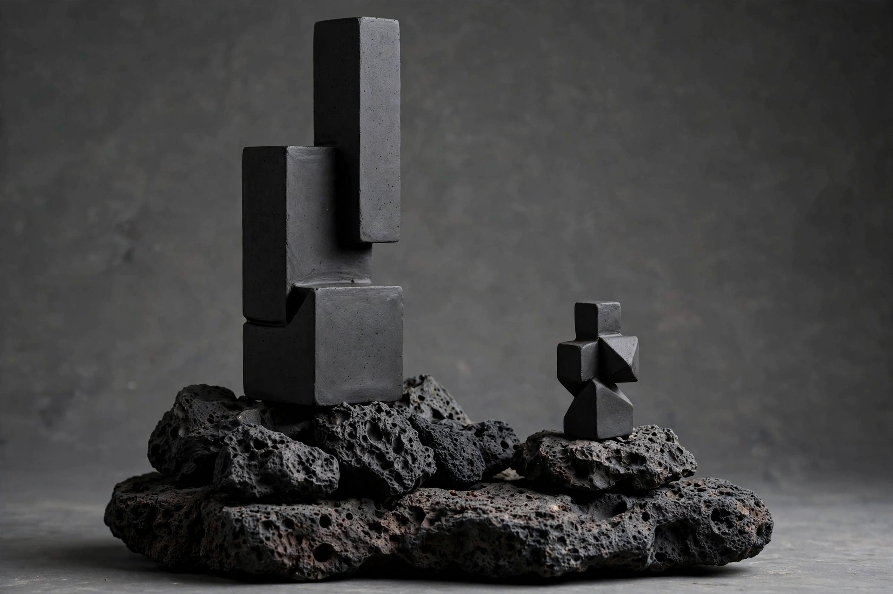

Postulante: 39913
Proyecto:Qué pasa cuando dos objetos distantes responden al mismo gesto. Qué pasa cuando la caricia estimula a otro generándole sensaciones a distancia. XV070 (exvoto) son dos cuerpos escultóricos alejados, pero interconectados sensorialmente. Uno mide 40 cm y otro 12 cm. Las piezas requieren de estímulos físicos para activarse. El visitante toca el totem mayor y el menor responde con una vibración mínima generando sonidos... que son su plegaria. La obra traduce el afecto en vibraciones que simulan una especie de actividad sísmica localizada. Todo esto da como resultado una ofrenda que se ejerce con el tacto y se recibe con la escucha, creando una simbiosis entre experiencia estética, naturaleza y tecnología.
El mecanismo es simétrico. Tocá cualquiera para ver responder a la otra.
Tocar una pieza activa la otra.( La señal de radio entre ambas puede fallar, dependiendo del entorno)
DESCRIPCION DE LA PROPUESTA
La fe funciona como un mecanismo de supuesta resolución de la incertidumbre ante lo irrepresentable. El ser humano produce objetos y gestos que funcionan como anclajes somáticos dotandole de un peso espritual y sacro, con esto justifica que la devoción se sostiene en lo que el objeto hace sentir en el cuerpo y "el alma". Creando rituales donde el acercamiento se da por medio del contacto fisico; asi se toca para saber o para creer. Lo sacro es un efecto de la relación táctil que el sujeto establece con el objeto, y a su vez el objeto devocional produce una cercania a la divinidad en el cuerpo que lo toca.
XV070 parte de esta idea y la traduce a una arquitectura materica-electrónica. La obra produce la fe que examina, de esta manera el visitante toca el tótem mayor / El menor responde. La fe está en la relación sensorial de ambos cuerpos, en la ofrenda y la reciprocidad.
Para el proceso inicial de la obra el barro se modela hueco, con paredes de 1 a 1.5 centímetros para la base y con ranuras internas de 5mm donde ira la pasta de plata; y para las zonas tactiles se debe pensar que estas se deben modelar con la idea de que al secar debe quedar de 5mm de espesor por lo que es importante tener en cuenta que al hornear las piezas pueden sufrir de contracciones de hasta el 5% de su tamaño original, hay que prevenir medidas. Sobre la cara superior de cada bloque se traza y pinta una almohadilla conductora con pasta de plata. se pasan las piezas aun sin armar al horno de barro para su cocción. Ya fría, la pieza recibe la electrónica por una abertura en el bloque base, que se sella de forma reversible para poder darle mantenimiento y recargarla.
La electrónica se arma bloquepor bloque manteniendo la continuidad de el enlace entre los dos nodos, para que la detección de toque,y la respuesta de vibración y sonido funcionan bien.
El tiempo de secado del barro depende del clima del sitio y no se puede forzar, si la pieza tiene grietas por minimas que sean, no funcionara adecuadamente en la conduccion electrica.
posiciones aproximadas sobre la forma real

El único requerimiento no trivial es acceso a un horno cerámico con capacidad de alcanzar la temperatura de cocción del barro, con margen de tiempo suficiente para completar el ciclo de horneado y enfriado sin apresurarlo.
Producción en In Situm
Precios estimados por comparación con proveedores similares.
| Concepto | Cantidad | Precio unitario | Subtotal | Compra |
|---|---|---|---|---|
| Electrónica | ||||
| ESP32 DevKit V1 | 2 | $150 | $300 | Ver ESP32 |
| ESP32 de respaldo | 1 | $150 | $150 | Ver ESP32 |
| Módulo LoRa SX1278 + antena | 2 | $150 | $300 | Ver LoRa |
| Sensor capacitivo MPR121 | 2 | $100 | $200 | Ver MPR121 |
| Pasta / tinta conductiva de plata | 6 | $120 | $720 | Ver tinta |
| Transductor táctil | 2 | $250 | $500 | Ver transductores |
| Amplificador clase D PAM8403 | 2 | $130 | $260 | Ver PAM8403 |
| Batería LiPo recargable 3.7 V | 2 | $200 | $400 | Ver baterías |
| Módulo de carga TP4056 | 2 | $15 | $30 | Ver TP4056 |
| Prototipado | ||||
| Perfboard / placa perforada | 2 | $50 | $100 | Ver perfboard |
| Cableado electrónico | 1 lote | $150 | $150 | Ver cableado |
| Conectores / headers / JST | 1 lote | $150 | $150 | Ver conectores |
| Termocontráctil / aislantes | 1 lote | $100 | $100 | Ver termocontráctil |
| Material escultórico | ||||
| Barro / arcilla · 3 kg | 1 | $250 | $250 | Ver barro |
| Herramientas | ||||
| Cautín regulable 60 W + soporte | 1 | $200 | $200 | Ver cautines |
| Estaño para soldadura | 1 rollo | $100 | $100 | Ver estaño |
| Consumibles varios | 1 lote | $100 | $100 | Ver consumibles |
| Logística | ||||
| Envíos / diferencias de precio | — | — | $200 | Reserva logística |
| SUBTOTAL DE COMPRA | $4,360 | |||
| Reserva técnica | ||||
| Colchón para reemplazo de componentes, errores de montaje o fallas | — | — | $640 | NO gastar |
| PRESUPUESTO TOTAL MÁXIMO | $5,000 | MXN | ||
Necesidades particulares de accesibilidad o cuidado
Por debajo del barro, la pieza es un dispositivo electrónico expuesto de manera permanente a la intemperie y a la manipulación física directa y constante del público. El barro se sella con impermeabilizante para exteriores. La abertura de acceso a la electrónica, en el bloque base, se cierra con una junta reversible, no con un sellado definitivo, porque el sistema debe poder recargarse y recibir mantenimiento sin romper la escultura. La fuente de energía es una batería recargable de bajo consumo, no una conexión eléctrica fija, para que ambas piezas puedan moverse o reubicarse con facilidad si el sitio lo exige.
La altura de montaje sobre la base de tezontle permite el acceso táctil desde distitos puntos de altura por lo que es optimo para todos los usuarios. La respuesta, vibración y Sonificacion (tono grave), se mantiene en volumen bajo/medio y de campo cercano. No requiere audio amplificado ni luz artificial.